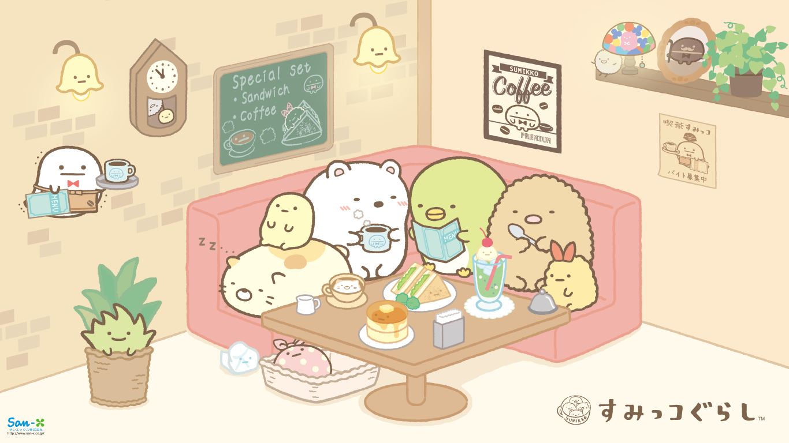
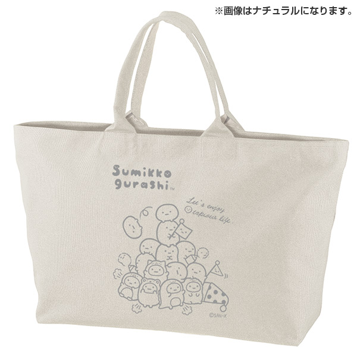
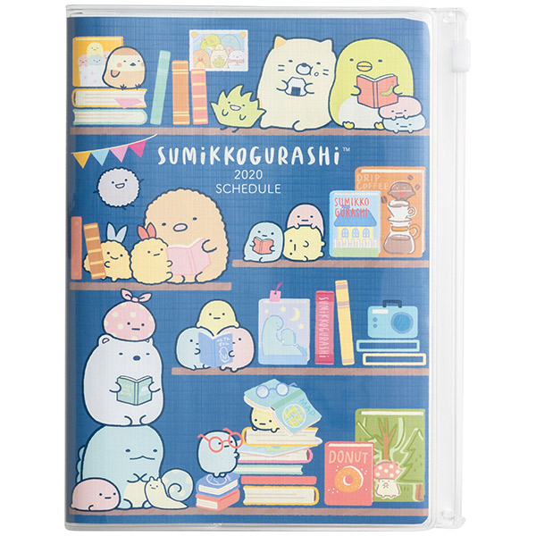
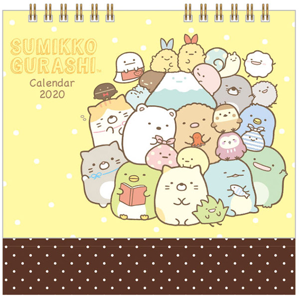

Animation
Product
News
Information
すみっコぐらし

すみっコぐらしとは？
すみっこが好きな方、すみっこが気になる方、あなたもすみっコなかまになりませんか？
電車に乗ればすみっこの席から埋まり、カフェに行ってもできるだけすみっこの席を確保したい・・・
そんな可愛い、癒し系のキャラクター“すみっコ”たちの集まり“すみっコぐらし”。
製品
最新情報

たぴおかブームにのって、トートバッグにも登場！かわいいポーズがいっぱいですよ。シンプルでオシャレなデザインに、大容量サイズで旅行バッグにもおすすめ♪生地色は5色から選べます

プライベートも忙しい学生さんや社会人にオススメ！予定をタスクごとに分けて書ける、実用的な手帳です。付箋や小物を入れるのに便利なジッパーポケット付♪

大きな書き込みスペースと、デスクに置けるコンパクトさが一番人気の卓上カレンダーです♪
Animation
すみっコぐらしの紹介アニメーションが公開されました♪
このナレーションを務めるのは人気声優の『増田俊樹』さんです！
すみっコファンはもちろん、増田さんのファンの方も是非ご覧くださいね♪